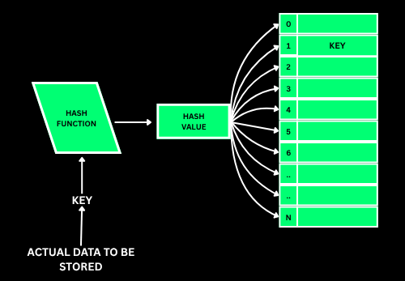
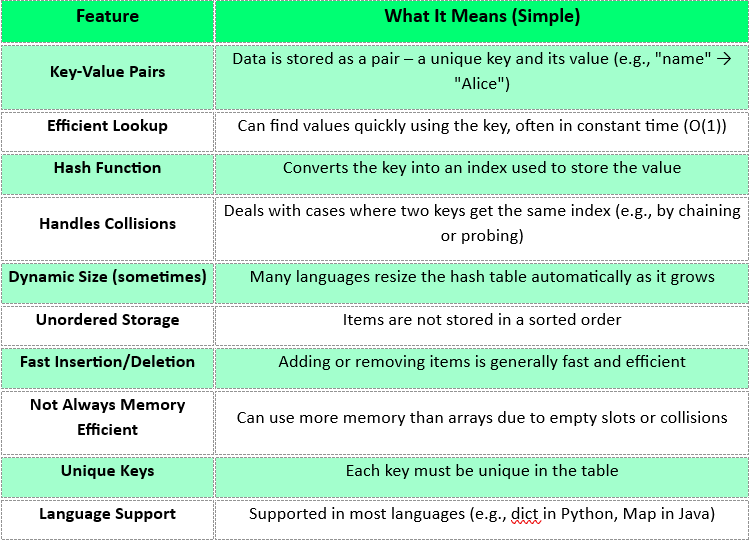
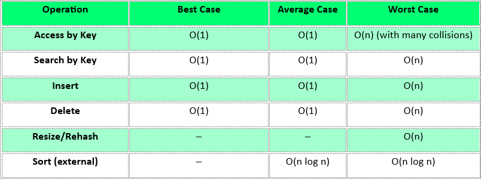

Hashing the key
Fold the key into an integer (h = h × 31 + c is the classic string hash), then take it modulo the bucket count. This step alone replaces the entire search.
O(k)timek = key length
A structure that runs a key through a hash function to compute an index, then stores the value right there. No scanning, no comparing your way in — you compute the location and jump straight to it, which is what makes lookup O(1) on average.

Trade a little memory for the ability to skip searching entirely.
A hash table is a dictionary. You hand it a key ("harsh") and it hands back a value (21) — immediately, without reading any other entry.
The trick: a small function turns the key into a number, and that number is the shelf position. Same key in, same number out, every single time.
Two different keys can land on the same shelf — that is a collision — so each shelf keeps a short list, or the entry hops to the next free shelf.
This is the single highest-leverage structure in interviews: it is what turns a nested-loop O(n²) brute force into a one-pass O(n) solution.
A hash function maps a key to an integer in 0 … m-1 where m is the bucket count, typically with index = hash(key) % m. A prime m spreads keys more evenly.
It must be deterministic (same key ⇒ same index), fast, and uniform. If it is none of those, everything collides and the table degrades into a linked list at O(n).
Load factor α = entries / buckets. Once α passes ≈0.75 the table resizes — usually doubling m — and rehashes every key, an O(n) operation amortised across all the cheap inserts.
Hashing destroys order, so there is no "first" or "smallest" key and no range queries. When you need order, reach for a tree map (std::map, TreeMap) at O(log n) instead.
An array indexed by integers already gives O(1) access. A hash table generalises that to any key type — strings, tuples, objects — by computing an integer from the key.
Think of it as an array whose index you calculate instead of being handed.
index = hash(key) % bucketCount
Type a key and watch the hash actually being computed character by character, then land in its bucket. Force a collision and see chaining handle it — and keep an eye on the load factor.
Constant-time access, at the cost of ordering and some empty space.

Collisions are unavoidable — these are the five standard ways to resolve them.
All three core operations are the same two steps: hash the key, then deal with the bucket.
Fold the key into an integer (h = h × 31 + c is the classic string hash), then take it modulo the bucket count. This step alone replaces the entire search.
Hash to a bucket, check whether the key is already there — if so overwrite the value, otherwise append the new entry. One value per key, always.
Hash to the bucket and scan only that bucket. Everything else in the table is never touched, which is exactly why the size of the table does not matter.
Hash, find the entry in its bucket, unlink it. With open addressing you must leave a tombstone instead, or probe chains break.
Two keys, one index. Chaining keeps a list per bucket; open addressing probes forward for the next free slot. Both are correct — they trade memory against cache behaviour.
When α > 0.75, allocate a bigger table and re-insert every key, because % m changes with m. Expensive once, amortised to nothing across many inserts.
Walking the table visits empty buckets too, so it costs O(n + m). And the order you get is arbitrary — never rely on it.
There is none. Extract the keys and sort them (O(n log n)), or use an ordered map if you need ranges and minimums often.
Pick an operation, pick a language, copy it out. Your language choice is remembered across every page.
Average O(1) holds while the hash spreads well and α stays low. Worst case is every key in one bucket.

The syntax and templates worth keeping open in a second tab. Print this section or grab the full multi-topic sheet.
Every one of these has cost someone an interview. Open each and check yourself.
Eight problems, easy to hard, each with a one-line hint. Try it without the hint first — the hint is for when you are properly stuck, not for when you are impatient.